图书发行集团
媒体总监
ToB 头部内容平台 | ToC 知识内容头部矩阵
内容与商业化制片人 / 直播负责人
节目导演 / 编剧
原《奇葩说》核心班底团队
导演
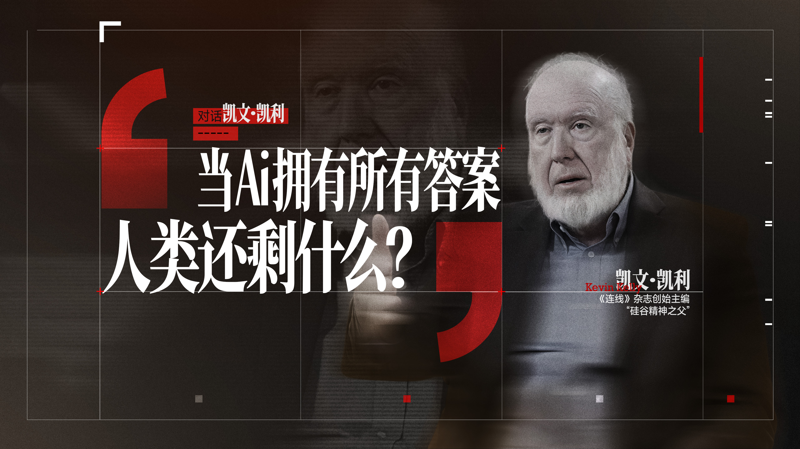
《深信Talk》特别 IP 企划，对话凯文·凯利解析《2049》。依靠自动化多模态生成方案完成跨语言资产高质感包装，重组前沿内容转化效率。
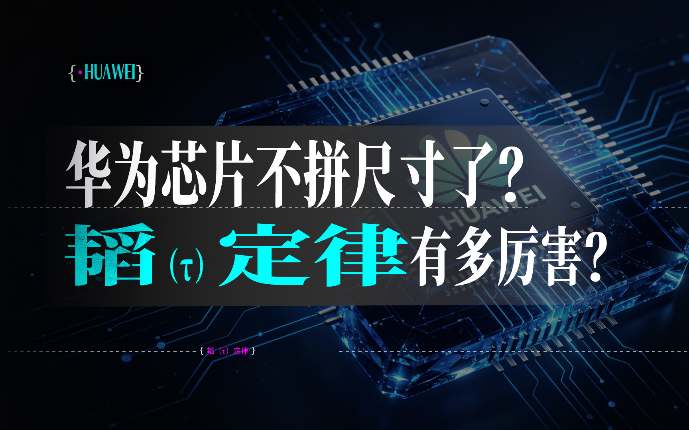
聚焦硬核科技趋势，运用多源视频语义提取与知识图谱构建技术，对海量前沿资讯进行多维向量化拆解，快速生成高信息密度的评论。
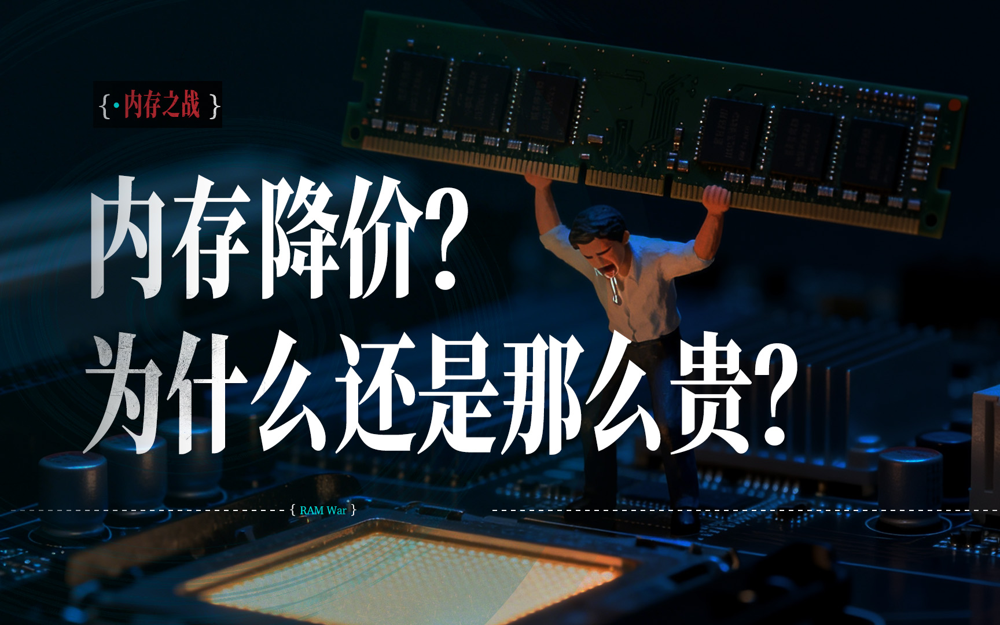
串联供应链周期与底层数据流，自动化级联生成动态信息图表，完成从晦涩商业逻辑到强视觉冲击力的工业化重塑。
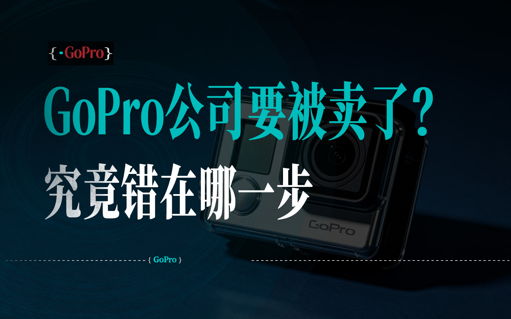
运用 95% 自动化管线进行品牌与商业史深度拆解，将繁杂的商业信息转化为高完播率的视听叙事。
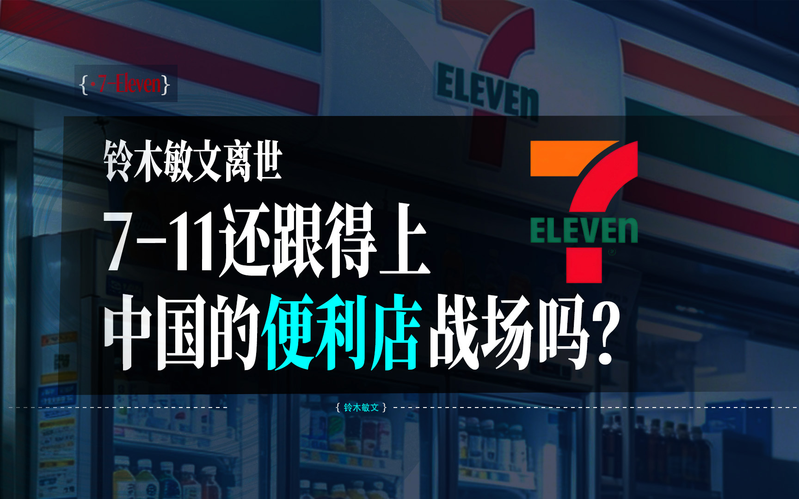
多维提取行业报告的核心数据节点进行动态声画渲染，攻克传统图文内容的传播厚度限制，完成高保真工业级交付。
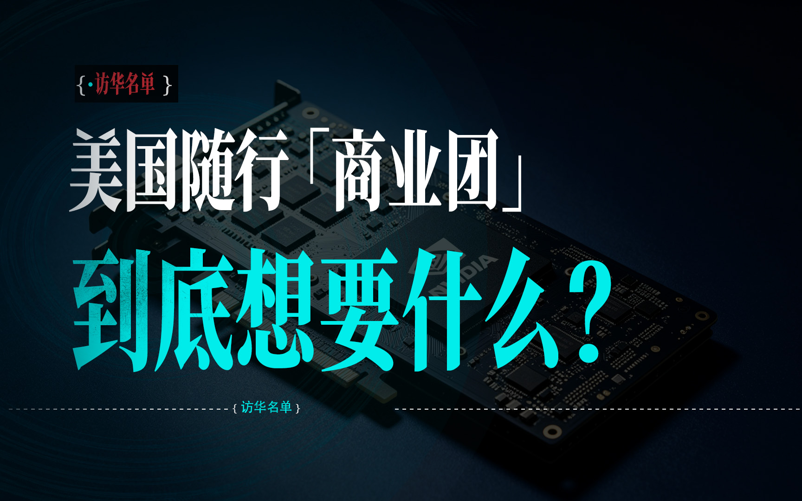
匹配热点爆发周期的时效性交付。通过全链路半自动化流对大事件与宏观政策完成模块化编排输出，完成大容量信息内容输出。
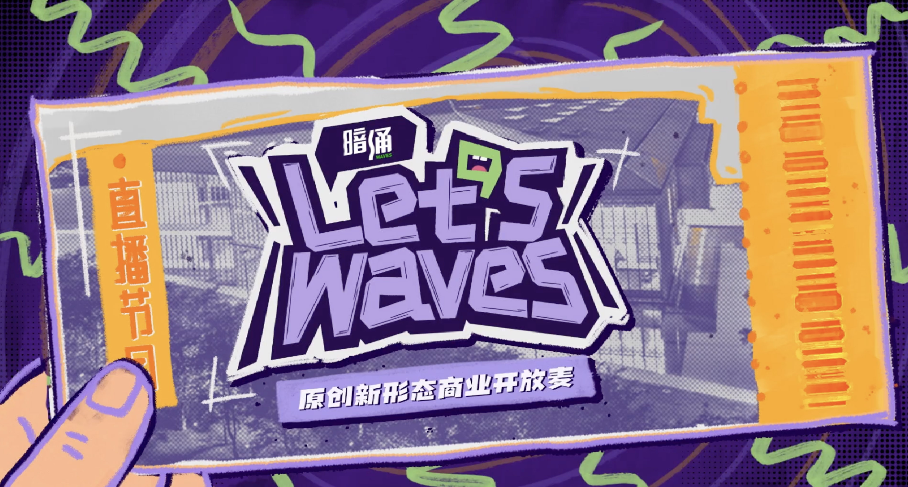
原创独家创投行业IP。担任总制片人、摄制与后期总负责人。14小时调度40人团队，全网首发曝光超4340万。
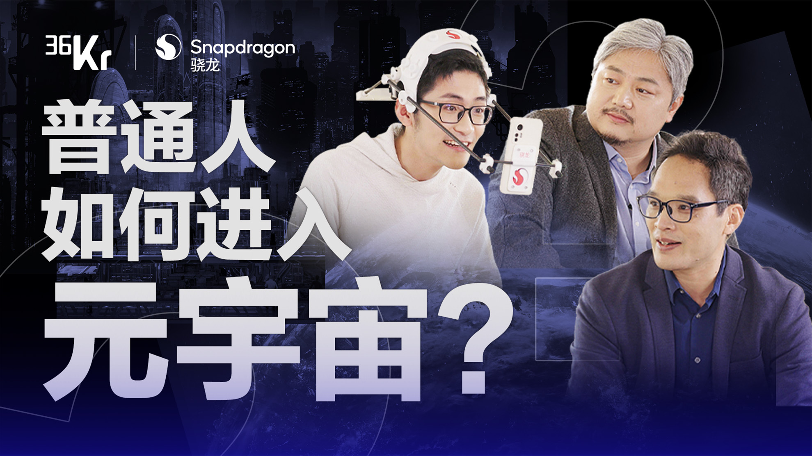
品牌内容营销。打造定制圆桌真人秀，获金榜奖最佳商业片提名，曝光超6859万。
担任总制片人与总编剧。统筹全摄制104人大型团队，完成复杂户外调度，曝光超757万。
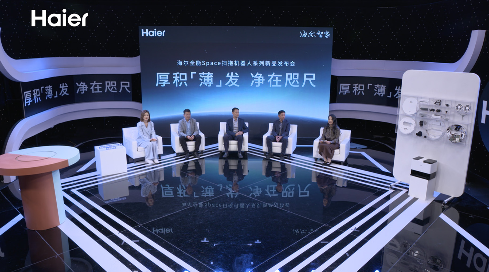
总制片人。统筹152人团队完成网络直播与TVC双调度，17个渠道转播发力。
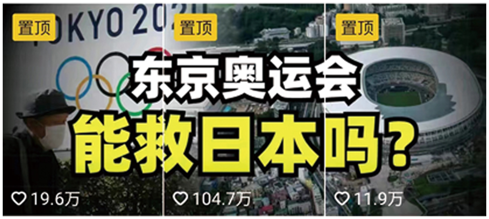
36氪标杆内容。矩阵观看超3000W，单条涨粉100W，斩获金瞳奖-最佳传播效果-金奖。
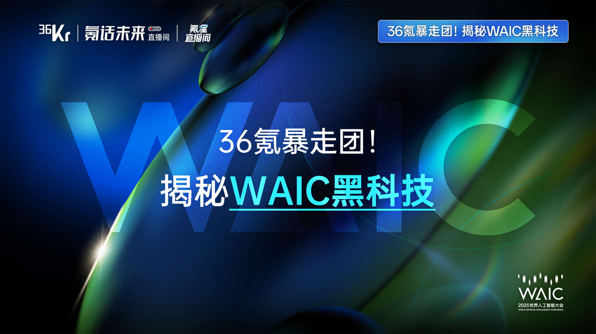
现场监督负责人。打通混合智能底层硬件方案的多端联播宣发闭环，覆盖 30+ 外部媒介渠道。
在此独立主理矩阵中，剔除同质化喧嚣，融合前沿科技理解力与资深媒体制片人的高严苛视觉标准。
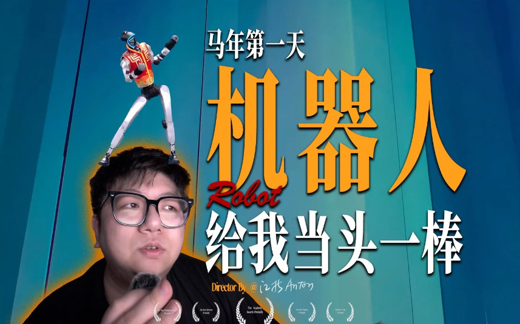
聚焦具身智能与机器人赛道，以专业视角和硬核逻辑拆解前沿科技，呈现极具深度的科技观察与商业脉络。
切入大商业体量、极高定制变现红利的新能源汽车赛道。展现跨领域的硬核内容驾驭能力与商业洞察厚度。
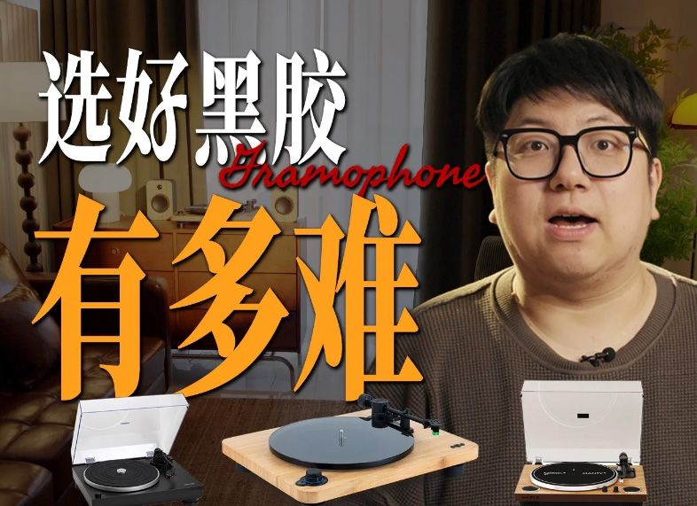
回归极致纯正的画面叙事，比签独立人文片高规格色彩科学铺陈，传递兼具美学调性与共鸣的内容护城河。
电子信息工程（通信方向） | 本科 | 2014.09 - 2018.06
Strategic Mission / 核心愿景
“ 驾驭 Agentic Workflow，构建 AIGC 工业级生产引擎。
以全新范式重塑内容杠杆，寻找下一个由算力驱动的品牌新高地与媒体商业化战场 。”
© 2026 Anton Chen. All Rights Reserved.
STATUS: SYSTEM ACTIVE